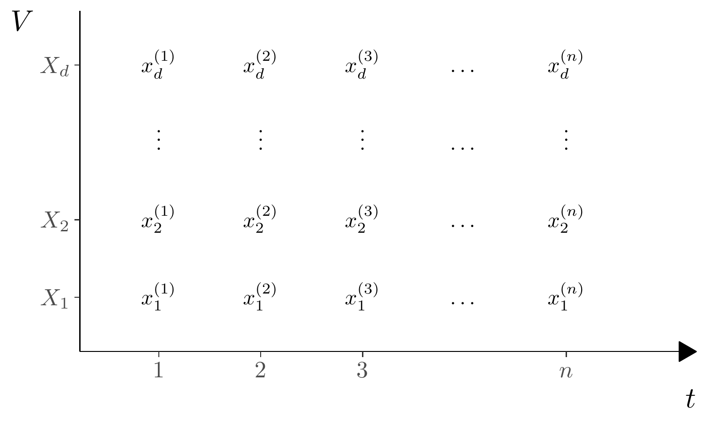
Estimation and model selection for graphical models under mixing conditions
Magno Severino
April 5, 2024
Agenda
- Introduction
- Motivation
- Regularized Maximum Pseudo-Likelihood Graph Estimator
- Algorithms for estimation
- Simulation Study
- Application to real data
Vector-Valued Stochastic Processes
\(X_v^{(i)} \in A,\) \(A\) a finite alphabet.
\(\bf X^{(i)} = \big(X_1^{(i)}, X_2^{(i)}, \dots, X_d^{(i)}\big).\)
Process \(\bf X = \{X^{(i)}: -\infty<i<\infty\}.\)
We assume the process \(\bf X\) has an underlying graph \(G^*.\)
Vector-Valued Stochastic Processes
\(X_v^{(i)} \in A,\) \(A\) a finite alphabet.
\(\bf X^{(i)} = \big(X_1^{(i)}, X_2^{(i)}, \dots, X_d^{(i)}\big).\)
Process \(\bf X = \{X^{(i)}: -\infty<i<\infty\}.\)
We assume the process \(\bf X\) has an underlying graph \(G^*.\)
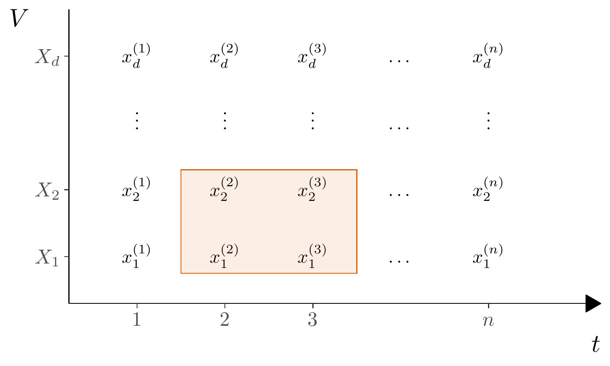
Previous works
Extensive research has been conducted on discrete graphical models or Markov random fields, especially for binary graphical models with pairwise interactions (Lauritzen, 1996, and Galves et al., 2015).
Methods for estimating graph structures have been proposed for continuous random variables and various types of interactions (Meinshausen and Bühlmann, 2006).
The assumption of independence of the observations in the non-homogeneous Markov random fields setting is often too restrictive.
The assumption of independence in observations is often too restrictive in real world scenarios (Cerqueira et al., 2017).
The independence assumption does not hold and these methods serve only as approximations to the true underlying distribution.
Traditional model selection techniques involve estimating neighborhoods of individual nodes and constructing the graph based on these neighborhoods (Ravikumar et al., 2010).
Motivation
- Leonardi et al. (2021):
- estimate blocks of independence within multivariate stochastic process,
- applied to both iid and processes under mixing conditions
- discrete or continuous data.
- Leonardi et al. (2023):
- estimate the neighborhood of each vertex and then constructs the graph,
- assume the process is iid
- discrete data.
Objectives of the research
Proposal: Method to estimate the graph of conditional dependencies for multivariate stochastic processes with mixing conditions.
Aim: combine and generalize previous works:
- Leonardi et al. (2023): estimator of neighborhood of each vertext for iid data.,
- Leonardi et al. (2021): method assumes decomposition into subvectors with immediate neighbor dependencies.
Proposed solution: penalized pseudo-likelihood criterion for entire graph estimation for multivariate processes with mixing conditions.
Key advantages:
- Handles non-iid data (mixing condition),
- Provides a global estimation approach.
Mixing Condition
\(X^{(i:j)}\) denote the sequence of vectors \(X^{(i)}, X^{(i+1)}, \ldots, X^{(j)}.\)
\(\bf X = \{X^{(i)}\colon -\infty < i < \infty\}\) satisfies a with rate \(\{\psi(\ell)\}_{\ell \in \mathbb R}\) if \[\begin{equation*} \begin{split} \Bigl| \mathbb P \bigl(X^{(n:(n+k-1))}=x^{(1:k)}\, |\, X^{(1:m)}=x^{(1:m)}&\bigr) - \mathbb P \bigl( X^{(n:(n+k-1))} =x^{(1:k)}\bigr)\Bigr| \\ &\leq \psi(n-m) \mathbb P\bigl(X^{(n:(n+k-1))}=x^{(1:k)}\bigr), \end{split} \end{equation*}\] for \(n\geq m+\ell\) and for each \(k, m \in \mathbb N\) and each \(x^{(1:k)} \in (A^d)^k\), \(x^{(1:m)}\in (A^d)^m\) with \(\mathbb P(X^{(1:m)}=x^{(1:m)})>0.\)
Empirical Probabilities
Assume we observe a sample of size \(n\) of the process, denoted by \(\{x^{(i)}\colon i=1,\dots,n\}\). Then, for any \(W\subset V\) and any \(a_W\in A^{W}\), \[\begin{equation*} \widehat{\pi}(a_W) = \frac{N(a_W)}{n}. \end{equation*}\]
If \(\:\widehat\pi(a_W)>0\), \[\begin{equation*} \widehat\pi(a_W|a_{W'}) = \frac{\widehat\pi(a_{W\cup W'})}{\widehat\pi(a_{W'})}\,, \end{equation*}\] for two disjoint subsets \(W,W'\subset V\) and configurations \(a_W\in A^W, a_{W'}\in A^{W'}\).
Given a graph \(G\) and a vertex \(v \in V,\) we can compute \[\begin{equation*} \widehat\pi(a_v|a_{G(v)}) = \frac{\widehat\pi(a_{\{v\}\cup G(v)})}{\widehat\pi(a_{G(v)})}, \end{equation*}\] here we are taking \(W = \{v\}\) and \(W' = \{G(v)\}.\)
Graph Estimator
Given any graph \(G\) and a sample of the process, we define the pseudo-likelihood function by \[\begin{equation} \label{eq:def_Lhat} \widehat L(G) \;=\; \prod_{i=1}^n \:\prod_{v \in V} \widehat\pi(x^{(i)}_v | x^{(i)}_{G(v)}). \end{equation}\]
Applying the logarithm we can write expression above as \[\begin{equation}\label{eq:log-pseudo} \log \widehat L(G) \;=\; % \sum N(a_v,a_{G(v)})\log \widehat\pi(a_v|a_{G(v)})\,, \sum_{v \in V} \:\sum_{(a_v\in A)} \:\sum_{a_{G(v)}\in A^{|G(v)|}} N(a_v,a_{G(v)})\log \widehat\pi(a_v|a_{G(v)})\,, \end{equation}\] where the sum is taken over all \(v\in V\) and all configurations \(a_v\in A\), \(a_{G(v)}\in A^{|G(v)|}\) such that \(N(a_v,a_{G(v)})>0\). Here \(|G(v)|\) denotes the cardinal of the set \(G(v).\)
Regularized Graph Estimator
Theorem 10: Assume the process \(\{X^{(i)}: i \in \mathbb{Z}\}\) satisfies the mixing condition presented before with \(\psi(\ell) = O(1/\ell^{1+\epsilon})\) for some \(\epsilon>0.\) Then, by taking \(\lambda_n = o(n^{-1/2}),\) we have that \[\begin{equation*}
\widehat G = \underset{G}{\arg\max}\Big\{\log \widehat L(G) - \lambda_n \sum_{v \in V} |A|^{|G(v)|}\Big\}
\end{equation*}\] satisfies \(\widehat G=G^*\) eventually almost surely as \(n\to \infty.\)
Theorem Proof Intuition
Consider \(\{\widehat G\neq G^*\} = \big\{G^* \subsetneq \widehat G \big\} \cup \big\{G^* \not\subset \widehat G \big\}.\)
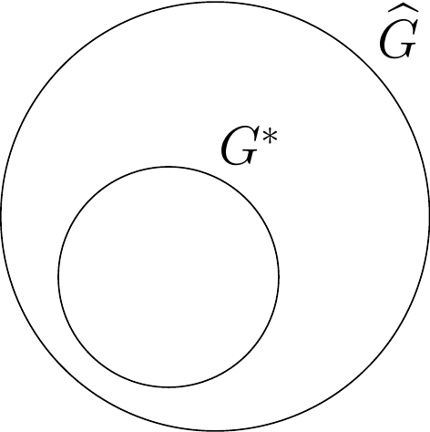
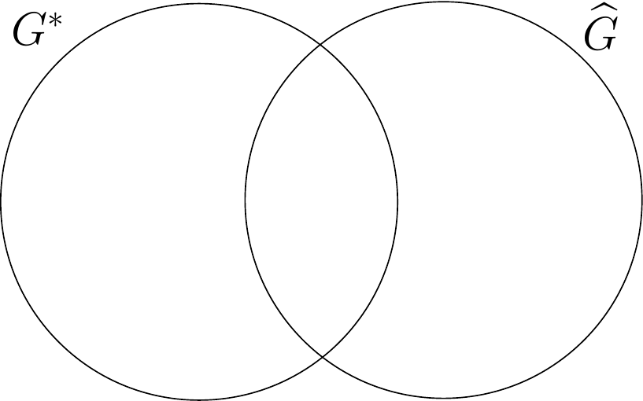
We prove that eventually almost surely as \(n\to\infty,\) neither of the cases above can happen, which implies that \(\widehat G = G^*.\)
Algorithms for estimation
Algorithms for Estimation
Define
Focus: determine the maximal value of \(H(\cdot)\) and identify the argument at which this maximum occurs.
Exact Algorithm
\(H(G) = \log \widehat L(G) - \lambda_n \sum_{v \in V} |A|^{|G(v)|}.\)
Define \[\mathcal{G} = \Big\{ G = (V, E): E \subseteq \{V\times V\} \setminus \{(v,v):v \in V\}\Big\}.\]
Set \[\widehat G = \arg\max_{G \:\in\: \mathcal{G}} H(G).\]
Drawback: computational complexity
\(\qquad |\mathcal{G}| = 2^{{d(d-1)}/{2}},\)
\(\qquad |V|=d.\)
Simulated Annealing Algorithm
\(H(G) = \log \widehat L(G) - \lambda_n \sum_{v \in V} |A|^{|G(v)|}.\)
\(H^* = \max_{G \in \mathcal{G}} \{H(G)\}.\)
\(\mathcal{H} = \{G \in \mathcal{G} : H(G) = H^*\}.\)
Definition of a neighbor of a graph.
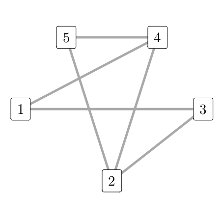
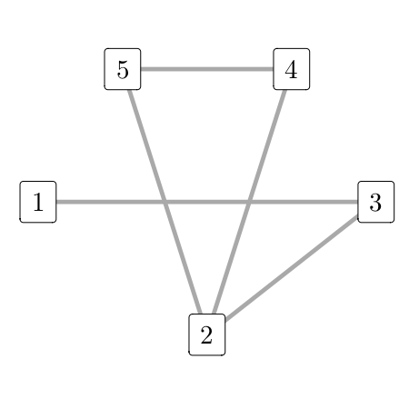
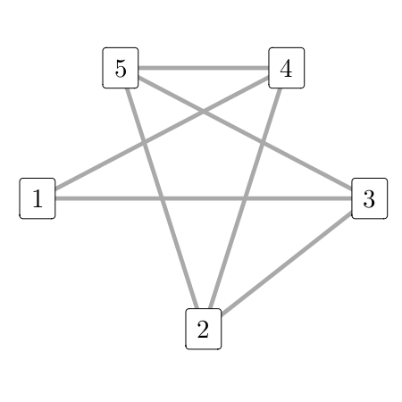
Simulated Annealing Algorithm
- Algorithm Overview:
- Initialize with \(G_1 \in \mathcal{G}\).
- Randomly choose neighbors \(G_n^\prime\).
- Transition based on a probability formula.
- Repeat for \(m\) iterations.
- Parameter Choices:
- \(m\): Number of iterations.
- \(C\): Constant in \(\eta_n = C\log(1+n).\)
- Initial state \(G_1\).
- Further details in Ross (2006).
Backward Stepwise Algorithm
Begins with a complete graph.
Removes edges one at a time, selecting the edge that maximizes improvement in fit.
Stops when no further enhancement in fit is achieved.
Forward Stepwise Algorithm
Starts with an empty graph.
Adds edges one at a time, selecting the edge that maximizes improvement in fit.
Stops when no further enhancement in fit is achieved.
The MixingGraph R package

Includes functions to compute the penalized log pseudo-likelihood function.
Implements the four algorithms considered for estimation: exact, simulated annealing, and forward and backward stepwise.
Offers examples on how to use the package.
Available at github.com/magnotairone/MixingGraph.
Simulation Study
Simulation Study
- Objective: Assess the performance of the proposed via simulation studies.
- Methodology:
- Utilize R language for statistical computing.
- Evaluate proposed graph estimator individually with each algorithm.
- Scenario 1: Fixed True Graph
- Generate synthetic data based on fixed true graph.
- Assess estimator’s performance under stability conditions.
- Scenario 2: Random Graphs with Varying Edge Number
- Generate random graphs with varying edge numbers.
- Evaluate estimator’s performance across graphs with different edge configuration.
Simulation Study - Sampling Scheme
The Gibbs sampler was set to perform \(15{,}000\) iterations, with a burn-in period of \(5{,}000\) iterations and thus \(10{,}000\) observations forming the final sample \(s_1, \dots, s_{10{,}000}\).
Smaller samples were extracted from the initial sample, with sizes \(N \in \{100, 500, 1{,}000, 5{,}000, 10{,}000\}\).
Example 11 - Scenario 1
Assume a fixed true graph exists with vertices \(X_1, \dots, X_5.\)
Joint probability function of these variables: \[ p(x_1,x_2,x_3,x_4,x_5) = p(x_3) p(x_1|x_3) p(x_2|x_1,x_3) p(x_4|x_3) p(x_5|x_3). \]
- Conditional probabilities:
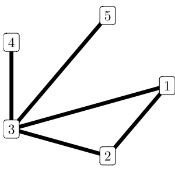
Aim: assess the performance of the algorithms for estimation.
Data generation: Gibbs Sampler algorithm (Geman and Geman, 1984 and Gelfand and Smith, 1990).
Example 11 - Exact Algorithm
Effects of sample size and penalizing constant value. 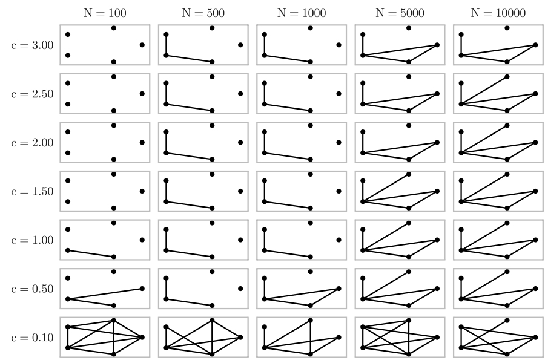
Example 11 - Simulated Annealing
Effects of sample size and penalizing constant value. 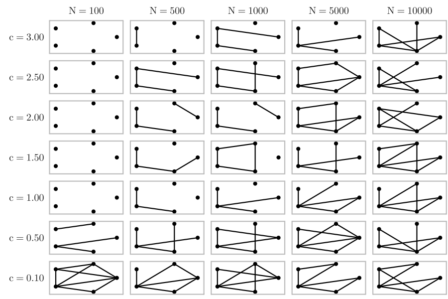
Example 11 - Backward Stepwise
Effects of sample size and penalizing constant value. 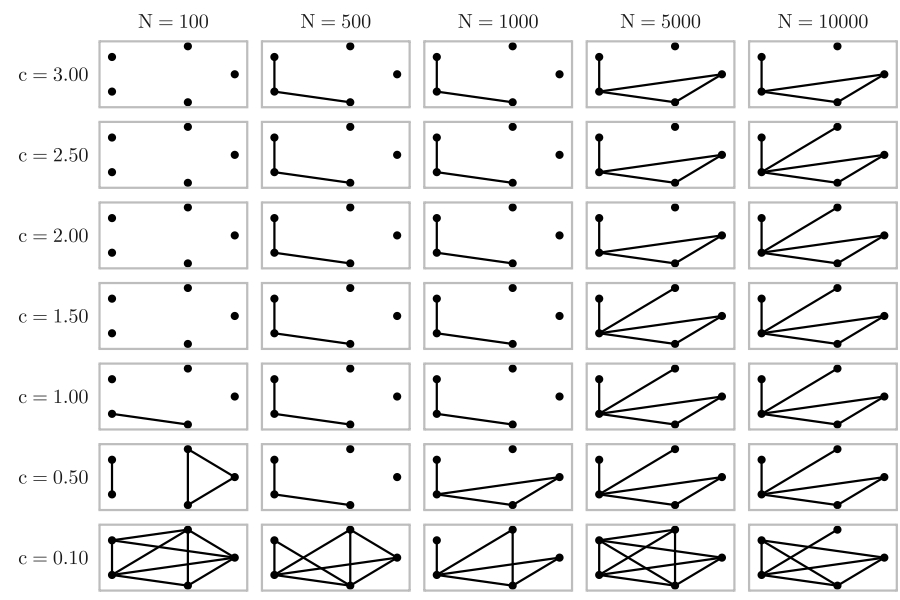
Example 11 - Forward Stepwise
Effects of sample size and penalizing constant value. 
The Choice of Penalizing Constant \(c\)
Objective: Evaluate methods for selecting penalizing constants in real-world scenarios.
Approach:
- Utilize \(k\)-fold cross-validation to assess model performance and select optimal penalizing constant values.
- Divide the dataset into \(k\) subsets (folds) for training and validation.
- Estimate the graph using each fold as validation data and the remaining folds for training.
- Compute pseudo-log-likelihood over validation sets for different constant values.
- Average pseudo log-likelihood over all folds to select the optimal constant.
The Choice of Penalizing Constant \(c\)
- Issue: Configuration mismatch between training and validation sets can cause problems in cross-validation. \[\hat\pi(a_v|a_{\hat G(v)}) = 0, \text{ resulting in } \mathrm{CV}_k^{(i)}(c) = -\infty.\]
- Solution: Introduce the hyperparameter \(\gamma\) to handle cases where observed configuration is absent in training set, \[\hat\pi(a_v|a_{\hat G(v)}) = \gamma.\]
- Redefinition: Rescale distribution \(\hat\pi(\cdot|a_{\hat G(v)})\) for configurations not seen in training data.
- Recommendation: Set \(\gamma\) to a small value for numerical stability.
- This change ensures stability and reliability of cross-validation method for real-world datasets.
The Choice of Penalizing Constant \(c\)
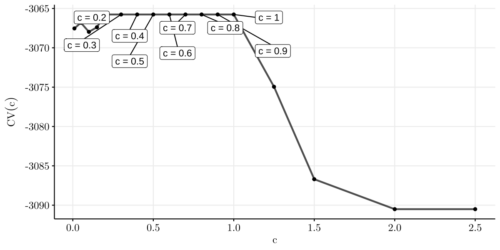\(5\)-fold cross-validation error for Example 11, considering a sample of size \(5{,}000\) and set of values for penalizing constant.
Example 11 - Scenario 2
Objective: Assess algorithms across diverse scenarios to understand their performance.
Methodology:
- Generate samples of different sizes (\(N\)) ranging from \(100\) to \(10{,}000\).
- Evaluate Exact, Simulated Annealing, Forward Stepwise, and Backward Stepwise algorithms.
- Vary penalizing constant values \(c = \{0.1, 0.5,\) \(1.0, 1.5, 2.0, 2.5, 3.0\}.\)
Metrics: underestimation error (\(ue\)), overestimation error (\(oe\)), and total error (\(te\)).
\(ue(G, \hat G) = \frac{\sum_{(v, w)}\mathbf{1}\{(v, w)\in E \text{ and } (v,w) \not\in \hat E\}}{\sum_{(v, w)}\mathbf{1}\{(v, w) \in E\}},\)
\(oe(G, \hat G) = \frac{\sum_{(v, w)}\mathbf{1}\{(v, w)\not\in E \text{ and } (v,w) \in \hat E\}}{\sum_{(v, w)}\mathbf{1}\{(v, w) \not\in E\}},\)
\(\qquad \qquad te(G, \hat G) = \frac{ue \sum_{(v, w)}\mathbf{1}\{(v, w) \not\in E\} + oe \sum_{(v, w)}\mathbf{1}\{(v, w) \in E\}}{|V|(|V|-1)/2}.\)
Example 11 - Scenario 2
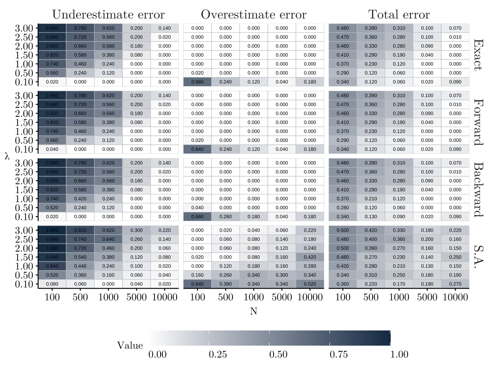Example 12: Random Graphs
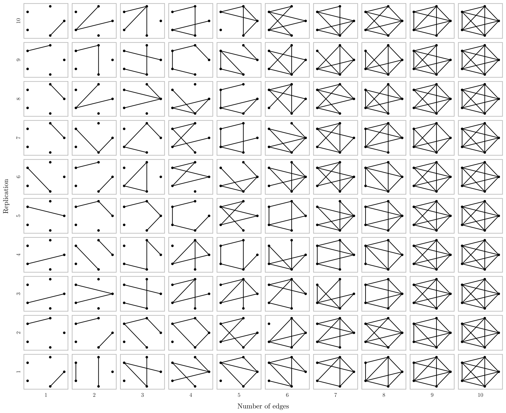Example 12: Random Graphs
Average error metrics outcomes of the forward stepwise algorithm as function of penalizing constant.
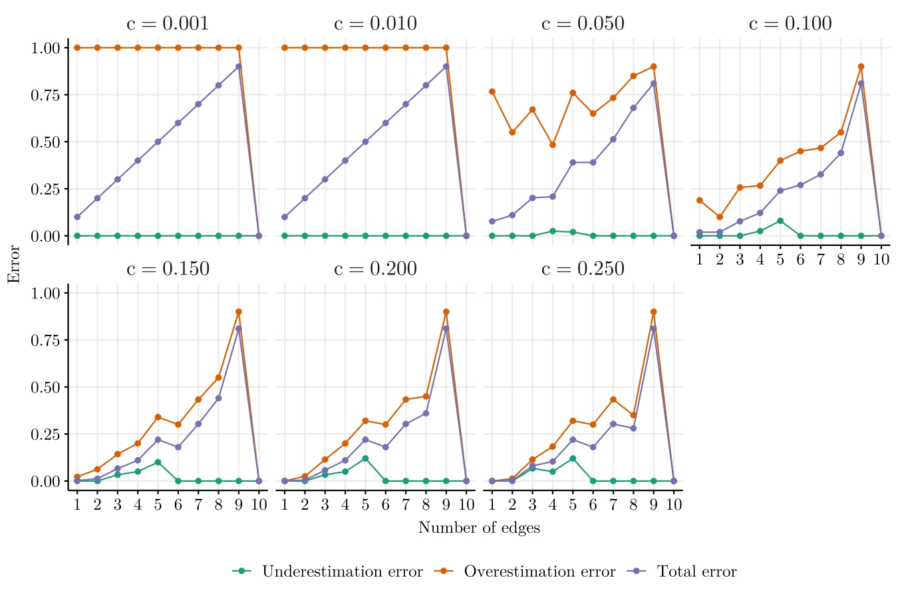Example 12: Random Graphs
Average error metrics outcomes of the forward stepwise algorithm as function of the number of nodes in the graph.
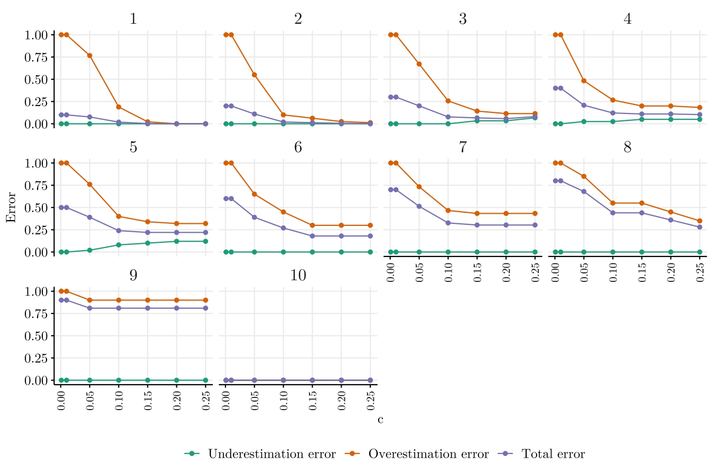Application to real data
São Francisco River Data
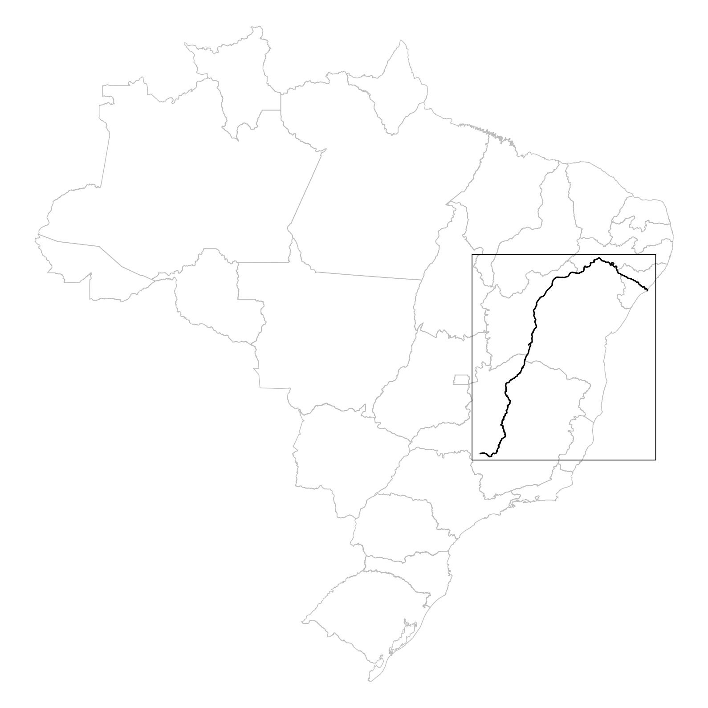
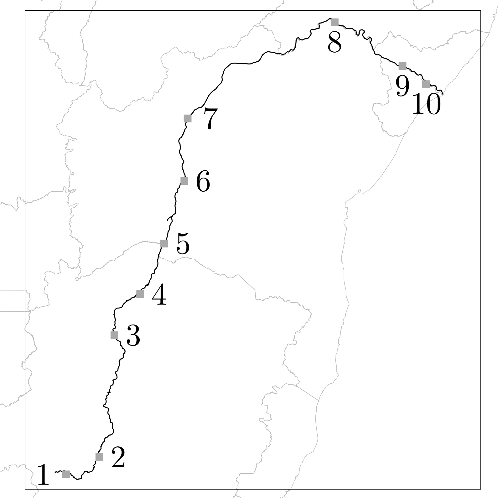
São Francisco River Data
Water volume measured at \(d\) stations along the river’s course.
Stations denoted as \(X_{u}\), where \(u = 1, \ldots, d\).
Vector \(\mathbf{X}\) observed at discrete time intervals (10-day mean).
Each observation denoted as \(\mathbf{X}^{(i)}= (X_{1}^{(i)}, \ldots, X_{d}^{(i)})\).
Process \(\mathbf{X}^n=\{\mathbf{X}^{(i)}: 1 \leq i \leq n\}\).
São Francisco River Data
Data avaiability: daily measurements from October 1st, 1924, to February 28th, 2019.
Data considered: from January 1977 to December 2016.
Total of 1042 observations.
Discretizetion of the data into five levels based on quantiles.
São Francisco River Data
Forward stepwise algorithm and a \(5\)-fold cross-validation approach (\(\gamma=0.0001\)).
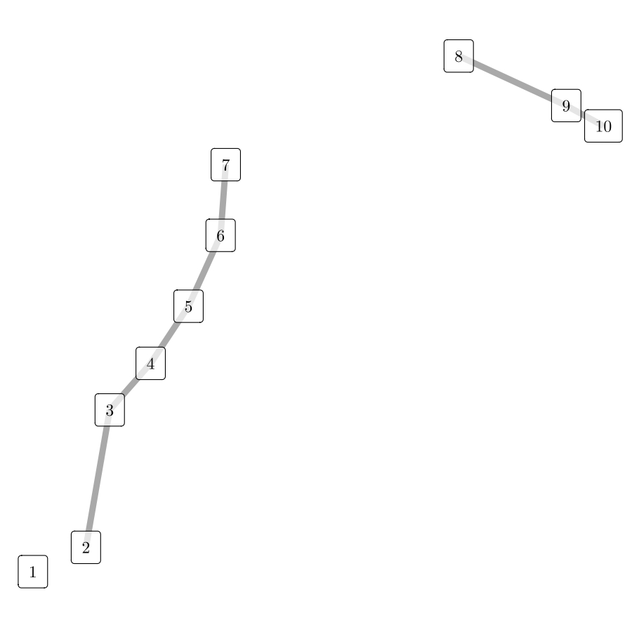
Results similar to Leonardi et al (2021).
Stock Exchange Data
Relation between stock exchanges’ performance reflect global market interconnectedness and economic trends.
Impacts investment strategies, risk assessment, and portfolio diversification.
Challenge: Variations in stock exchange operating hours due to different time zones.
Complex analysis required to account for global market fluctuations.
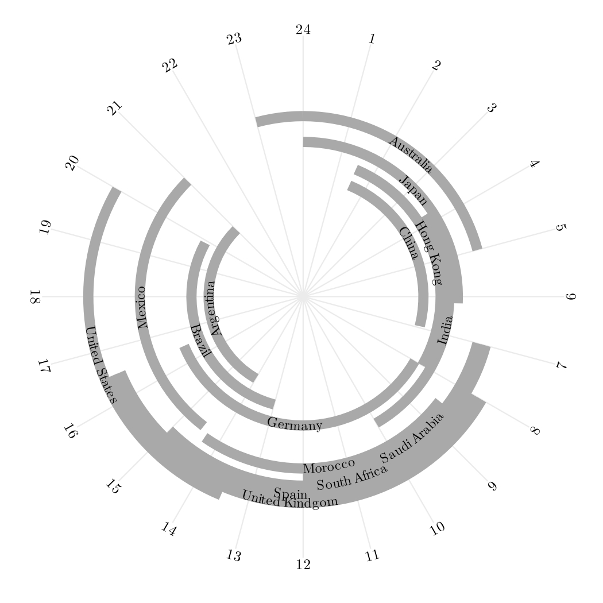
Stock Exchange Data
Objective: analyse the Relation between stock exchanges’ performance.
Discretization: daily indicator of an increase in the index rate.
Adjustments made to address missing data and holiday schedules.
Final dataset comprises \(2{,}654\) rows for analysis.
Utilized proposed graph estimator with a \(5\)-fold cross-validation approach (hyperparameter \(\gamma=0.0001\)).
Explored a range of penalizing constant values (\(c\)) for optimal performance.
Stock Exchange Data
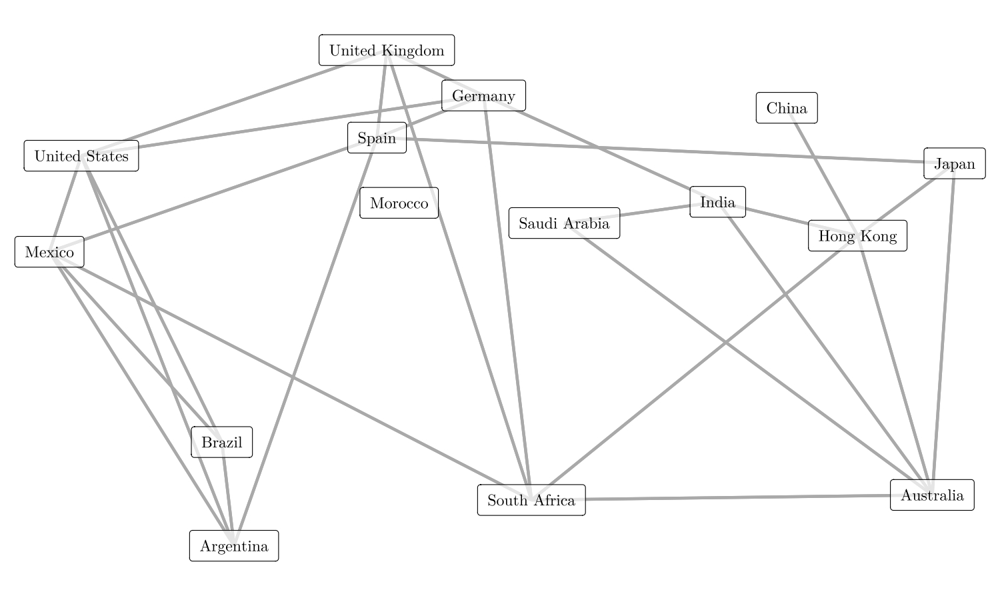Estimated graph, considering the penalizing constant value chosen by cross-validation.
Conclusion and Future Work
Motivated by Leonardi et al., 2023 and Leonardi, 2021.
Introduced penalized pseudo-likelihood criterion and model selection criterion.
Developed method for estimating entire graph \(G\).
Proved consistency and convergence rate.
Explored implementation approaches: exact, simulated annealing, stepwise.
Conducted simulation study to evaluate effectiveness.
Showed analysis and application to real-world data.
Future Work:
- Generalize approach for continuous multivariate stochastic processes.
- Extend methodology to infinite vertex sets and unbounded estimators.
- Adapt model to estimate direction of edges for directed graphs.
References
Cerqueira et al.(2017) Andressa Cerqueira, Daniel Fraiman, Claudia D. Vargas and Florencia Leonardi. A test of hypotheses for random graph distributions built from eeg data. IEEE Transactions on Network Science and Engineering, 4(2):75-82.
Galves et al.(2015) Antonio Galves, Enza Orlandi and Daniel Y. Takahashi. Identifying interacting pairs of sites in Ising models on a countable set. Braz. J. Probab. Stat., 29(2):443-459.
Lauritzen(1996) Steffen L Lauritzen. Graphical models, volume 17. Clarendon Press.
Leonardi et al.(2021) Florencia Leonardi, Matías Lopez-Rosenfeld, Daniela Rodriguez, Magno TF Severino and Mariela Sued. Independent block identification in multivariate time series. Journal of Time Series Analysis, 42(1):19-33.
Leonardi et al.(2023) Florencia Leonardi, Rodrigo Carvalho and Iara Frondana. Structure recovery for partially observed discrete markov random fields on graphs under not necessarily positive distributions. Scandinavian Journal of Statistics.
Meinshausen and Bühlmann(2006) N. Meinshausen and P. Bühlmann. Highdimensional graphs and variable selection with the lasso. Ann. Statist., 34(3):1436-1462.
Ravikumar et al.(2010) Pradeep Ravikumar, Martin J. Wainwright and John D. Lafferty. High-dimensional Ising model selection using l1-regularized logistic regression. Ann. Statist., 38(3):3022-1319.